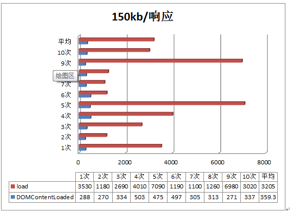
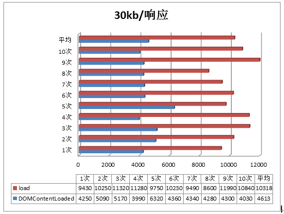
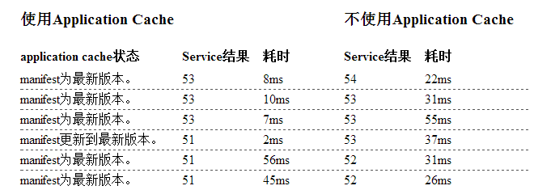
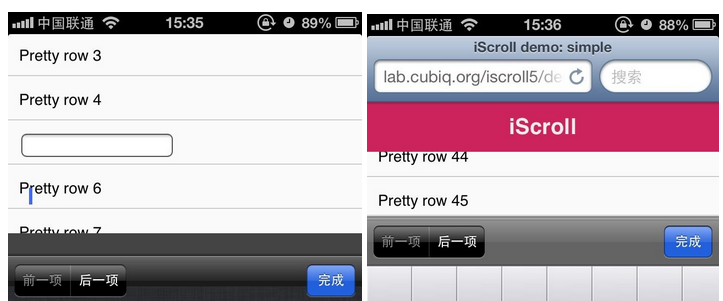

单页or多页
本文仅代表个人观点，不足请见谅，欢迎赐教。
webapp
小钗从事单页相关的开发一年有余，期间无比的推崇webapp的网站模式，也整理了很多移动开发的知识点，但是现在回过头来看，webapp究竟是好还是不好真是一言难尽哟！
webapp使用JavaScript修改页面；紧接着再从服务器传递更多数据然后再修改页面，如此循环。
从性能的角度看，在现代浏览器中单页面Web App已经能够和普通native应用程序相媲美，而且几乎所有的操作系统都支持现代的浏览器。
所以，很多人认为webapp是HTML5流行过程中最大的赢家，那么他有哪些特定呢？
SPA（single page application），即单页webapp，它具有以下优点：
用户体验，对于内容的改动不需要加载整个页面。这样不会出现白页情况，页面与页面无缝切换，甚至带有一定动画效果。
请求量少，请求内容无需服务器解析，对服务器压力较小，消耗更少的带宽，比如每次不需要接收完整的html结构，而只需要json数据。
当然，单页应用也不是完美无瑕的，他也具有以下问题：
由于历史原因，单页应用对SEO支持不是太好，需要对SEO做特殊处理。
首次加载量过大，首屏加载慢，所以首屏需要做特殊处理。
本身入门门槛就高，加之view编码需要释放资源，以免heap值过高，对编码人员的要求较高。
现状
传说中的webapp足以媲美native app，事实上这个足以还有很大的距离，小钗预计这个“足以”需要用2-3年时间填平，所以事实是什么呢？
事实上移动端的webapp模式的网站很少很少，一淘半年前还是，这两天一看又变回来了，小钗虽然对webapp抱有信心，但是信心从何而来呢？
携程webapp独树一帜，去哪儿ipad介入webapp，但是国内主流网站依旧是传统网站，主要原因不过有二：
① SEO
② 不想吃螃蟹
所以，携程的webapp在国内，何其可贵，说到这里，我都要哭出来了......
优劣之分
孰优孰劣非是小钗可以论断，求稳，webapp不比传统网站；求SEO，webapp需要其它解决方案；说垃圾收集，webapp需要自己释放资源。
说体验，webapp需要考虑首屏加载；说动画，webapp要考虑低端手机，所以webapp还有很长一段路需要走！
小钗相信，现在的webapp效果不可媲美native app，总有一天，当webapp不再制约于网络、设备，那么webapp的春天不会远。
虽说如此，现阶段webapp也会有许多优化心得、奇技淫巧可以拿出来说说的，这里小钗做一次分享，希望可以对webapp的同学有所帮助。
网络传输优化
综述
前端优化分为两个切入点：网络传输与DOM操作，而网络传输是制约一个网站速度的主要因素。
网络传输的优化要点是，零请求，无流量，其意是最大程度的减少请求数，降低请求量。
对webapp模式的应用来说，首屏加载慢是一个不可避免的问题，所以提升webapp首屏加载速度是提升整体网站速度的关键。
fake页-首屏加速


以上是一个网站首页的加载时间，我们分别取其150kb与30kb网速的加载速度，可以看出会慢！若他是webapp，我们可以做一些优化
我们应该避免页面长时间白页，这个时候便提出了fake页的概念。页面渲染只需要完整的HTML以及CSS，这个便是第一个优化点。
从数据请求数以及请求量来说，webapp首页的响应应该比较慢，若是任由js加载完成再渲染页面，用户很有可能失去耐心。
但是从DOMContentLoaded来看，首页事实上页面响应比较迅速，所以这个加载结束后页面第一屏便渲染结束，然后再异步加载js，当js改变后再动态改变dom结构中的一些关键点
这个时候一个静态HTML页面，装载首屏的基本内容，让首页快速显示
然后js加载结束后会马上重新渲染整个页面，这个样子，用户就可以很快的看到页面响应，给用户一个快的错觉，给人感觉快得多。
降低请求数
由webapp首页来说，不可避免的使用的js文件较多，这些文件分为两类：
① 框架js-css
② 各个业务团队js-css
所以可以限定每个业务团队只会加载这四个文件，以最小降低请求数，这里又涉及到并行加载，数量与容量有一个临界值，如何取这个临界值需要各位自己去实验
降低请求量
虽说图片压缩是不必说的事情，但是总会有些时候你会发现一些网站的图片尺寸很大，这个需要处理，而且必须处理。
以框架库为例，除了核心包以外，不需要的UI或者功能库可以剔除，用到了再动态加载，减少首次加载量，这个一开始就得做好，做不好后期就不好改
以业务团队为例，首次加载的js与html模板会将常用的几个页面压缩合并，其它页面访问时再请求，若是想提升首屏加载便可以只下载需要的页面文件。
另外，以下两点尤其需要注意：
① 若是你们是要的还是jQuery库的话，可以考虑换成zepto了
② 勿胡乱引用第三方库，若是要引用一定是读懂源码的情况下重写使用之，这样的好处是，吃得透，万一有问题，能改，而不是没办法又换库
缓存Ajax/localstorage
该方案的原理与前面类似，我们发送Ajax请求时候，应该缓存一些非实时数据，比如城市信息和常用联系人，但是我们只能缓存非敏感信息，
产品搜索页至列表页的请求数据会缓存30s-60s，若是过期时间内用户回到列表页的话不会重新请求数据
这对服务器压力，页面响应皆是有利的，这个在30s内事实上意义不大，可以减少一次请求。
另外，对于get和post的效率，曾经有人做过一次测试：
get100次平均耗时323ms；post100次平均耗时589ms，所以post方式是比get慢的，但post请求的优点是安全，并且参数没有长度限制。
是选择post还是选择get，皆需要处理，避免截断url，或者处处post。-
lazyload
只显示首屏页面，其它内容需要时再加载，比如列表页、图片lazyload，皆需要做
DOM操作优化
综述
DOM操作主要分为页面渲染与资源清理（heap控制），两者之间又相辅相成，若是DOM操作一块处理不好，其产生的感觉就不再是慢，而是卡
所以DOM操作优化的主要目的就是消灭页面卡的问题，这个在移动端尤为重要。
关于页面渲染
浏览器会解析三个东西：HTML、Javascript、CSS
浏览器首先会根据HTML生成DOM Tree，其次会根据CSS生成CSS Rule Tree，javascript可以通过DOM API与CSS API操作DOM Tree与CSS Rule Tree，从而引起页面变化。
浏览器解析结束会通过DOM Tree与CSS Rule Tree形成render tree，只有display不为none的元素才会形成render Tree，render Tree形成后浏览器会调用GUI绘制页面，在此之前做的一件事情便是layout或者说reflow。上面的描述简单而言可以分为以下流程：
l 生成DOM树
l 计算CSS样式
l 构建render tree
l reflow，定位元素位置大小
l 绘制页面
在这个过程中，若是javascript动态改变DOM Tree便会引起reflow
页面中的元素改变，只要不影响尺寸，比如只是颜色改变只会引起repaint不会引起回流
否则，reflow不可避免，这个时候便需要重新计算形成render Tree
reflow分为局部回流与全局回流，会影响下面的，不会影响上面的元素
reflow耗用的系统资源较大，DOM Tree中受到影响的节点皆会reflow，然后影响其子节点最坏的情况是所有节点reflow，该问题引发的现象便是低性能的电脑风扇不停的转，手机变得很热，并且非常耗电，以下操作可能引起reflow
l 操作dom结构
l 动画
l DOM样式修改
l 获取元素尺寸的API
减少使用定位属性（fixed/absolute）
static元素处于文档流中，其渲染速度是最快的，我们做过一个测试：
100个absolute元素与100个static元素渲染时差在0.01-0.007ms
100000个元素渲染差距便增至30ms左右，这个微小的时差在移动端变得尤为明显，比如：
小米/三星手机（1000左右），便存在明显的渲染问题，具体表现为：
l 定位元素在手机上不能显示。
l 定位元素动画效果失效。
以上问题便是UI渲染失效多导致，最好的解决方案是减少使用定位元素，否则只能引起强烈reflow才能解决。
另外，产品经常会有fixed的相关需求，比如支付按钮一直出现在低端，这个需求会造成两个问题：
l fixed元素遭遇文本框时失效，可能会飘到页面中间阻挡输入
l 影响效率
问题一原因与移动端的实现有关，暂时没有完美的解决方案，问题二便与渲染直接关联
滚屏时，页面上所有的像素会跟着滚动，显卡对全屏幕上下移动的处理很快，但是若是出现一个fixed元素或者有元素不跟着一起滚动，那么滚动对手机浏览器来说就是一个负担，这种滚动的性能甚至体现在了iphone 4s，因为滚动可能会造成reflow，这个现象体现在：
使用absolute配合javascript模拟fixed效果时，会有断片的效果，该问题在iphone5s便不会出现这个问题。
奇技淫巧
当然，我们不能忽略产品的需求，fixed类需求应该在技术上得到解决，还用户一个良好的体验。
虚拟键盘导致fixed元素错位
fixed元素一定会伴随虚拟键盘的出现，但是虚拟键盘只是“贴”在了viewport上，表面上不会对dom产生“任何”影响，但是这个时候fixed元素表现却变得怪异起来，会错位。
应用层面解决问题方案是，虚拟键盘弹出时将fixed元素设置为static，虚拟键盘消失时候设置回来。
由于虚拟键盘出现并未抛出事件，而检测scroll或者resize事件，皆会有一定延迟，会出现闪烁现象，所以现有最好的方案是setinterval定时器监控当前获取焦点元素是否为文本元素，若是是的话便需要处理，如此便可解决fixed元素错误问题。
fixed元素滑动惯性平滑度
我们常常遇到这种产品需求，tab标签栏开始固定，当滚动向下超过该标签栏后便会变成fixed元素，一直出现在头部，这样的需求在电脑上没有问题，但是在iPhone5s以下的手机常常会出现小范围错位或者快速移动大范围错位的问题。
这个时候我们可以引起reflow迫使浏览器重绘以解决这个问题，这里推荐一个奇怪的hack写法：同时设置三个image元素的src属性，便可以全范围解决该难题， 该方案被团队证实并得到应用。
//三图片src，引发reflow，处理fixed方案惯性问题
var el = this.els.ctlc.find('img');
$(el[0]).attr("src", 'http://res.m.ctrip.com/html5/Content/images/144.png');
$(el[1]).attr("src", 'http://res.m.ctrip.com/html5/Content/images/144.png');
$(el[2]).attr("src", 'http://res.m.ctrip.com/html5/Content/images/144.png');
另外，上图中的tab标签下面的蓝线具有动画，但是在小米或者三星手机上可能不会移动，这个时候也可以动态引起reflow解决这个BUG。
其它
l CSS选择器尽量使用id与class，避免过度层叠
l 避免使用数值，比如：border: none不会引起渲染，而boder: 0会
l 动画时候让元素脱离文档流，以免导致大量reflow
l 避免逐条修改DOM样式，改以className实现同样功能
l 操作DOM时将display设置为none，因为这种元素不会影响渲染，或者操作fragment对象取代操作显示在页面上的DOM
l 避免将获取DOM样式属性的操作写在循环中，可能引起重复reflow
内存资源优化
移动端的javascript
首先，移动端的性能与PC端的性能完全不在一个数量级上，比如，我哥做过一个测试，使用innerHTML绘制大段，之后想获取HTML的ID节点，事实上是获取不到的，这种问题在单页模拟多页，动态创建DOM会经常发生
var element = $('<div id = "test">...大量结构...</div>');
$(root).html(element)
$('#test) //为空
这类问题匪夷所思，因为页面UI渲染与DOM操作是互斥的，但是就算出现了这个问题，一个解决方案是使用settimeout，更好的方案是使用DOMNodeRemoved事件监控页面DOM改变，将我们的DOM操作回调放入以确保渲染结束。
以上问题只是为了说明移动端的性能问题，这类性能问题会导致很多莫名其妙的问题，而且很多与渲染有关。但是这也从侧面说明了移动端资源的紧缺，若是heap值过大，会导致操作出现卡的现象，更有甚者，会引起页面假死直接退出。
webapp的模式，完全依赖于浏览器的垃圾回收，基本就是作死，因为传统页面一旦刷新页面整个资源完全释放，而webapp没有刷新这类操作，只有一个状态到两一个状态，不相关的内存会保留，资源必须手动释放，或者说，框架必须提供垃圾释放的机制。
这个由图表heap值变化可以清晰看出。
而view切换过程中，不用的资源若是不手动设置为null会导致变量得不到回收便脱离框架控制而失控了。所以我们在webapp的过程中需要注意：
l 释放没有使用的闭包
l 观察者需要得到清理
l 释放定时器
l view切换过程中，在destroy中释放view相关资源
——感谢艾伦友情支援
闭包陷阱
在我们工作过程中，滥用局部变量极有可能引起闭包陷阱，这个问题不止是性能问题，在逻辑上会引起错误，而且不易发现，比如，在AMD闭包中使用一个局部变量
var _attributes = {};
callback ($.extend(_attributes, opts));
如此操作，会改变_ attributes对象，若是一个实例还无问题，但是两个实例的话便会发生变量污染。
这只是一个例子，但是在代码中滥用局部变量可能会引起不必要的隐忧，戒之慎之。
webapp资源释放
根据前面的描述，我们可以得出一个结论：
无论是view还是UI组件我们得提供统一的destroy接口，以便让用户继承释放资源。
若是view的资源得不到释放导致heap值过高，webapp模式的网站其价值大减。这里有几点可以考虑：
l webapp中view实例保存不超过5个，多了便释放dom结构以及内存引用（临界值自己判断最优）
l view隐藏时释放内部资源，解除DOM事件句柄
l UI组件与view相同，需要统一释放机制
但是单页应用由于页面不会刷新，总有一些资源得不到释放，此问题任重道远，平时编写过程可以做以下优化：
l 使用函数替换逻辑
让我们的函数产生一个返回值替换函数中的大段逻辑，这样的第一个好处便是逻辑清晰，第二个好处是这些函数在不同的函数中，这个函数被使用后便会自动得到释放。
l 清理闭包引用
当一个闭包函数或者什么使用结束后，若不会再使用，便需要手动清理该变量，以便解除闭包之间的引用关系，从而释放资源。
l 使用对象属性或者方法
一个对象可以引用其他对象的属性或者方法，比如obj.foo = thatObj;这种情况下，我们可以随时删除对象解除引用关系，然后便可以清理资源。
动画与假死
动画而言建议采用CSS3实现动画，CSS3中又推荐采用最新的接口，比如使用transform取代top/lelf操作，这样操作效率搞得多。
若是采用动画可以将对应元素设置为absolute以减少回流，另外最关键一点还是
避免移动DOM树过多的节点，这个时候需要驳回产品无理需求，比如：
产品要求日期滚屏组件，显示半年的数据，这半年的数据便是180个DOM树
这个级别的DOM一旦移动整个手机会直接卡死，甚至构建DOM树，渲染页面也会出现假死现象，该问题需要规避。
Application Cache
Application Cache是HTML5为webapp离线使用而增加的API，与localstorage、cookie等不同，Application Cache存储的是一系列请求资源允许浏览器在请求资源时不必通过网络，设计得当的话可以实现离线应用。
使用Application Cache主要是在网络性能上提升，有效降低了网络延迟，提升请求加速

但是也会有一些问题，比如新版本缓存不立刻生效；manifest中的请求路径相对于manifest文件，而非加载页面；更新/回滚等问题，所以使用与否还得论证。
体验优化
区域滚动
移动端经常需要实现区域滚动的需求，成熟的也有IScroll解决方案，但是方案却不理想。

就官方的例子便会出现以下问题：
l 头部消失
l 偶尔不能显示文本框焦点，或者焦点错位
若是以上问题可忽略，但是文本框不见了这种事情，我是不会接受的
导致的原因与组织浏览器默认事件有关，所以，我这里不太推荐各位大范围的使用区域滚动，而改在区域使用，
就去哪儿的ipad版本在一个具有文本框的地方使用了IScroll，其提高的用户体验与导致的问题一样引人入胜。
事实上，小钗及其推崇IScroll库，虽说他有这样那样问题，但是，IScroll是最有可能带来移动端革命的库，因为他可以：
① 解决webapp区域滚动
② 变相解决fixed问题
③ 解决动画过程带来的长短页问题
总而言之，IScroll方案的提出，是让webapp媲美native app靠近了一大步，真正的平起平坐还需要浏览器的支援
点击响应
click本身在移动端响应是没有问题的，但是我们点击下来300ms 的延迟却是事实，这种事实造成的原因就是
手机需要知道你是不是想双击放大网页内容
所以click点击响应慢，而touch却不会有这样的限制，于是移动端的touch相当受欢迎，至于鼠标慢，他究竟有多慢，我会告诉你每次会慢300ms


所以该问题需要处理，具体见：http://www.cnblogs.com/yexiaochai/p/3462657.html#_h2_7
结语
webapp不是一天两天的事情，总有一天，webapp会绽放其应有的风采！